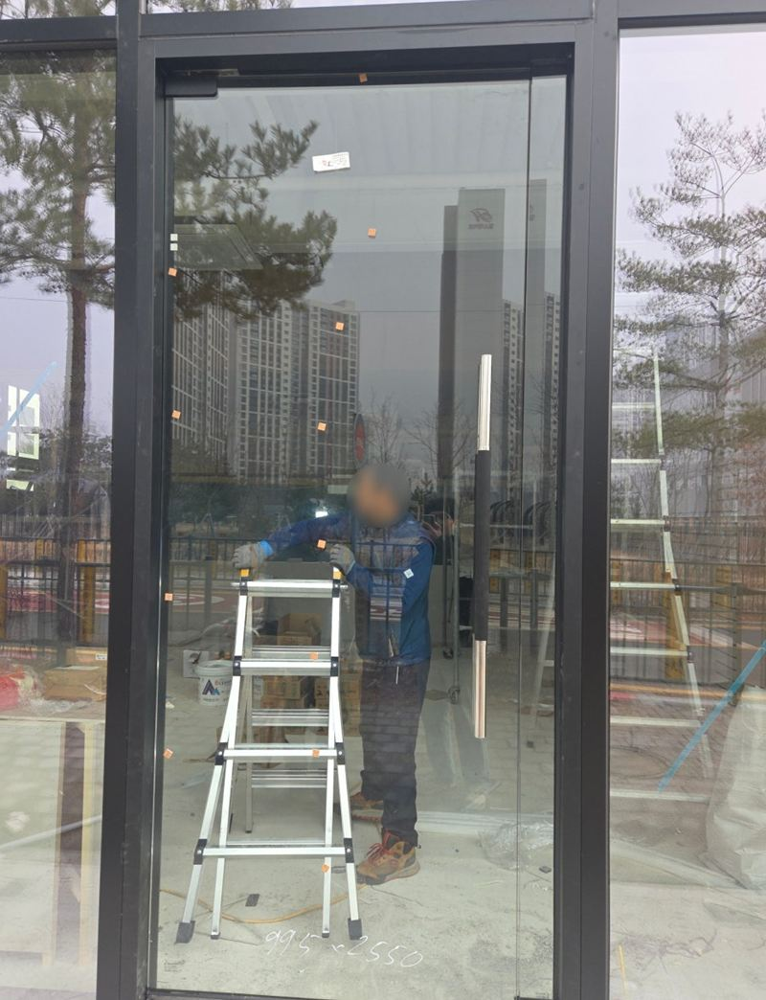
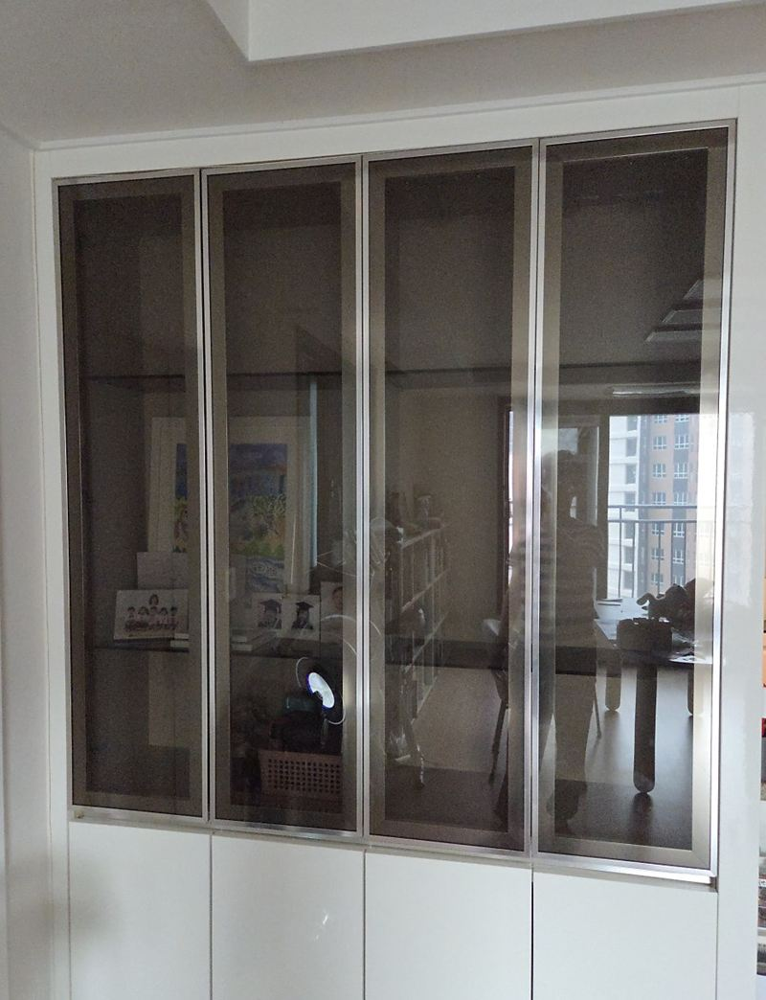
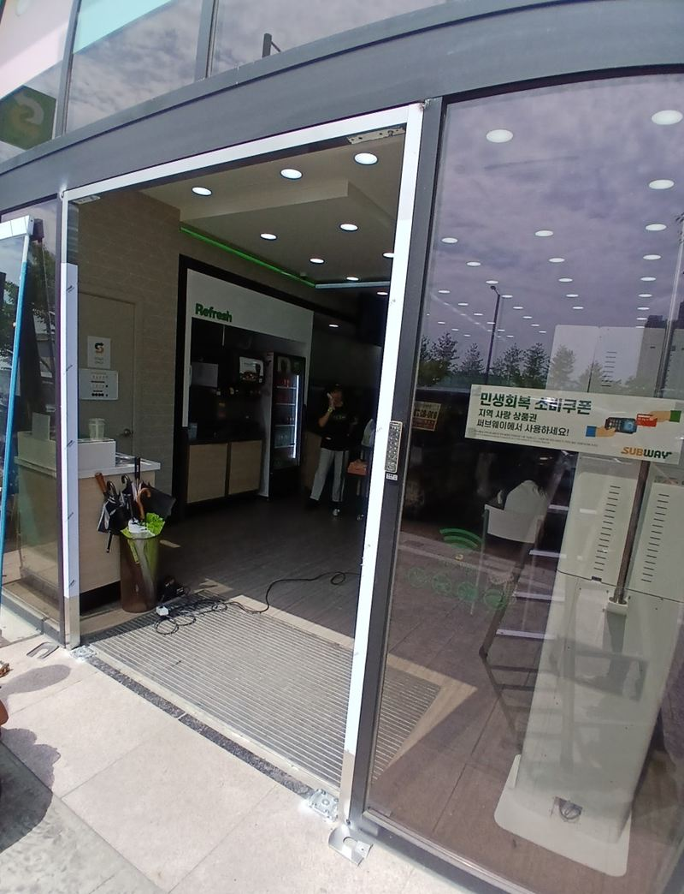
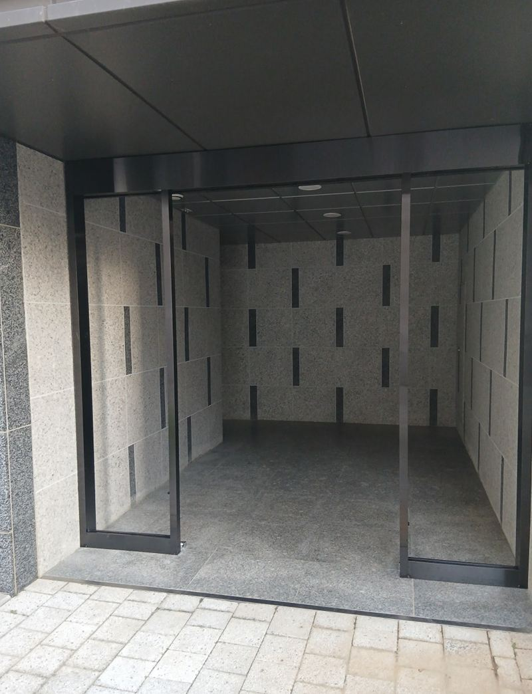
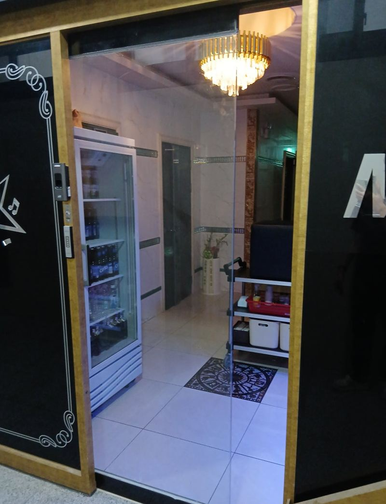
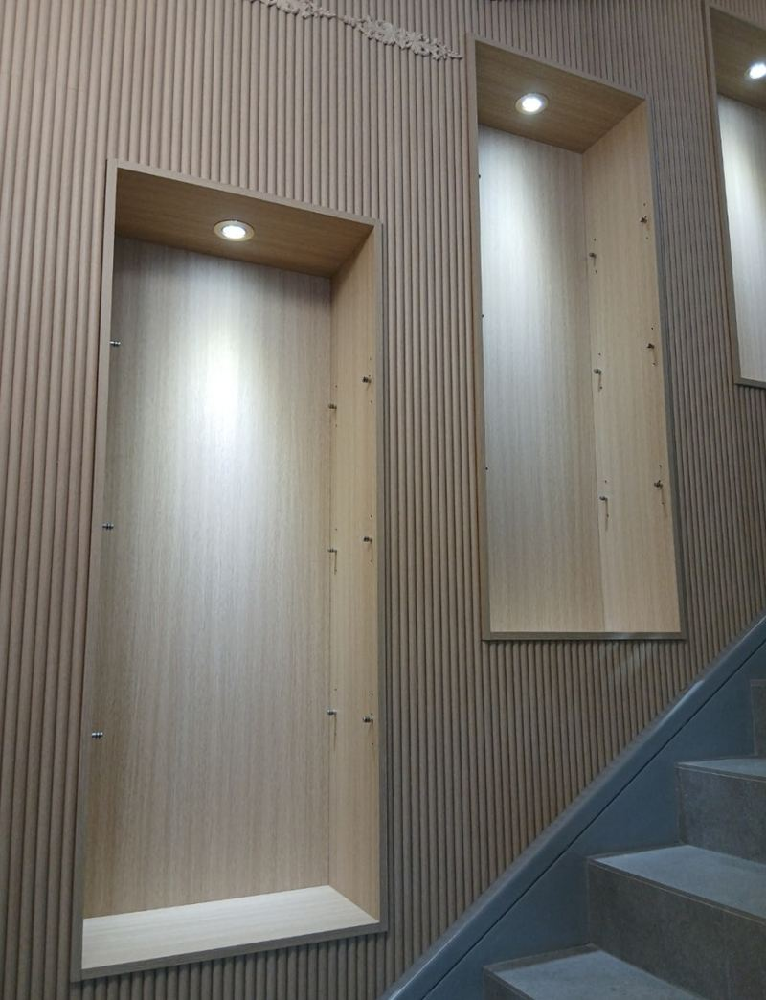
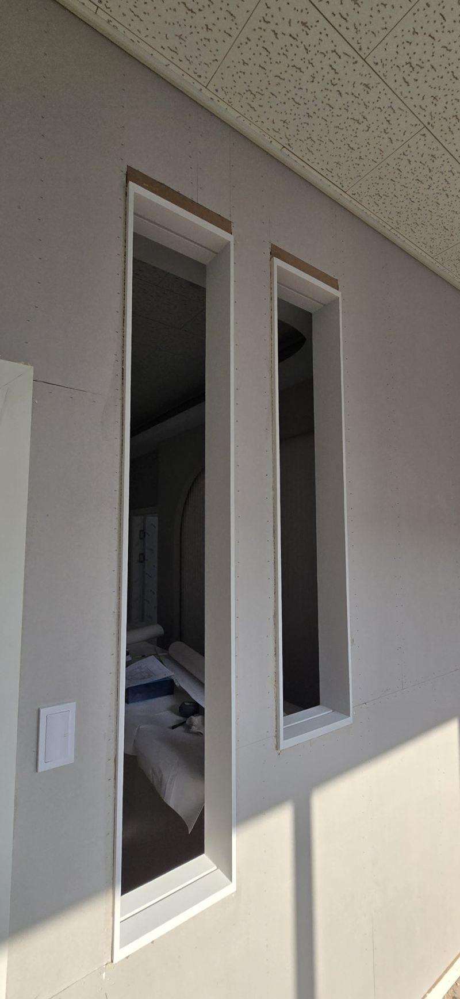

홈 › 유리문·자동문
상가 자동문·강화유리문
설치 비용과 종류
가게나 학원의 출입문은 손님이 처음 만나는 얼굴이라 고장 나면 바로 티가 나요. 유리문 힌지가 처지거나, 자동문 센서가 말을 안 듣거나, 유리에 금이 가는 경우가 많아요. 상가 출입문, 건물 현관, 실내 유리 칸막이 문까지 현장에 맞는 방식을 골라 시공해요.

출입문 종류별로 보면
| 종류 | 특징 |
|---|---|
| 강화유리 힌지문 | 손으로 밀고 당기는 문. 바닥 힌지와 상부 피봇이 문 무게를 받쳐요. |
| 센서 자동문 | 사람이 다가가면 열리는 미닫이. 모터·센서·레일 점검이 필요해요. |
| 프레임리스 유리도어 | 테두리 없이 깔끔하지만 숨은 보강 구조가 중요해요. |
| 셔터문 | 수동·자동이 있고, 영업 후 출입구 전체를 닫을 때 써요. |
유리문 공사 비용이 달라지는 부분
유리 두께와 크기, 문짝 수, 자동문이라면 구동부를 새로 하는지, 기존 문을 철거·폐기하는지에 따라 달라져요. 크기가 큰 유리일수록 보강과 운반 인원이 더 필요해요. 출입구 전체가 나오게 찍은 사진과 대략적인 폭·높이를 알려주시면 방식부터 같이 정해요.
유리문 공사 전에 많이 찾아보시는 것
- 장식장 유리문은 왜 자꾸 처지고 빠질까?
- 빠진 유리문은 어떻게 다시 달까?
- 경첩 교체 비용은 무엇에 따라 달라질까?
- 프레임 없는 유리문, 흔들림은 어떻게 잡을까?
- 바닥 매립 힌지는 어떻게 설치할까?
- 학원·음식점 유리문 시공 전에 정할 것은?
- 아파트 출입구 외풍, 자동문으로 막을 수 있을까?
- 센서 자동문은 어떤 순서로 설치할까?
- 자동문 센서가 오작동하는 이유는?
- 깨진 자동문 유리만 바꿀 수 있을까?
- 자동문 유리는 어떤 순서로 교체할까?
- 교체 후 자동문은 무엇을 점검할까?
- 자동문 대신 강화유리문으로 바꾸면 뭐가 나을까?
- 자동문 철거와 유리문 설치는 어떤 순서일까?
- 강화유리문 견적은 무엇에 따라 달라질까?
지역별 유리문·자동문 현장

안성 음식점·학원 상가 유리문 힌지 시공 방법안성
은평 장식장 유리문 처짐, 경첩 교체 비용서울 은평
평택 자동문 철거 후 강화유리문 설치 견적평택
평택 건물 출입문 센서 자동문 시공 방법평택
평택 강화유리 슬라이딩 자동문 유리 교체 방법평택 평택 수동·자동 셔터문 종류와 설치 비용평택 · 블로그 현장기 ↗
평택 수동·자동 셔터문 종류와 설치 비용평택 · 블로그 현장기 ↗
평택 유리도어 종류별 특징과 설치 비용평택 · 블로그 현장기 ↗
송도 학원 유리도어·유리창 안전 시공 방법인천 송도 · 블로그 현장기 ↗
유리문·자동문 질문
영업 중인 가게도 작업할 수 있나요?
출입이 적은 시간에 일정을 맞춰요. 출입구가 열려 있는 시간이 생기니 미리 말씀해 주세요.
장식장 유리문 처짐도 고치나요?
네, 장식장 유리문 경첩을 교체해 처짐을 잡은 현장이 있어요.
출입구 전체 사진과 고장 난 부분을 찍어서 보내 주세요.
전화 상담 010-4517-9872